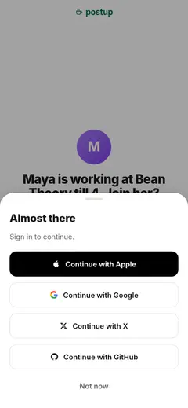
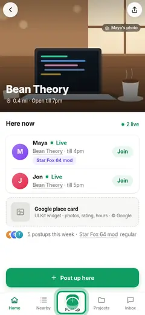
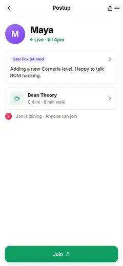
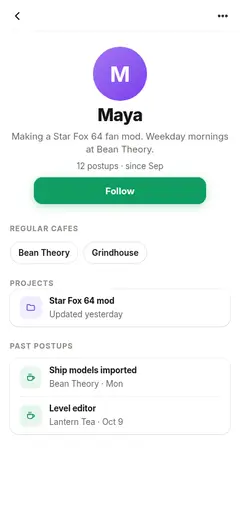
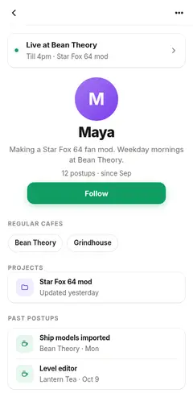

Wants to join the friendFirst visit → Joined from a shared link · 2 She's live right nowFirst visit → Leaves without signing in · 4
She's live right nowFirst visit → Leaves without signing in · 4 Wants to see what Maya makes nextRegistered visit → Follows a maker while hosting · 4
Wants to see what Maya makes nextRegistered visit → Follows a maker while hosting · 4 Wants to see what Maya makes nextRegistered visit → Follows a maker · 5
Wants to see what Maya makes nextRegistered visit → Follows a maker · 5 Wants to see what Maya makes nextRegistered visit → Follows the host's project · 4
Wants to see what Maya makes nextRegistered visit → Follows the host's project · 4

What's this cafe like?First visit → Posts up at that cafe · 2
She's live right nowFirst visit · 4 She's live right nowFirst visit → Leaves without signing in · 4
She's live right nowFirst visit → Leaves without signing in · 4
Signed up; following MayaFirst visit → Follows a maker · 6
Wants to see what Maya makes nextRegistered visit → Follows a maker · 5 Wants to see what Maya makes nextRegistered visit → Follows a maker while hosting · 4
Wants to see what Maya makes nextRegistered visit → Follows a maker while hosting · 4
Wants to see what Maya makes nextRegistered visit → Follows the friend's project · 4Wants to see what Maya makes nextRegistered visit → Follows a maker · 5Wants to see what Maya makes nextRegistered visit → Follows the host's project · 4